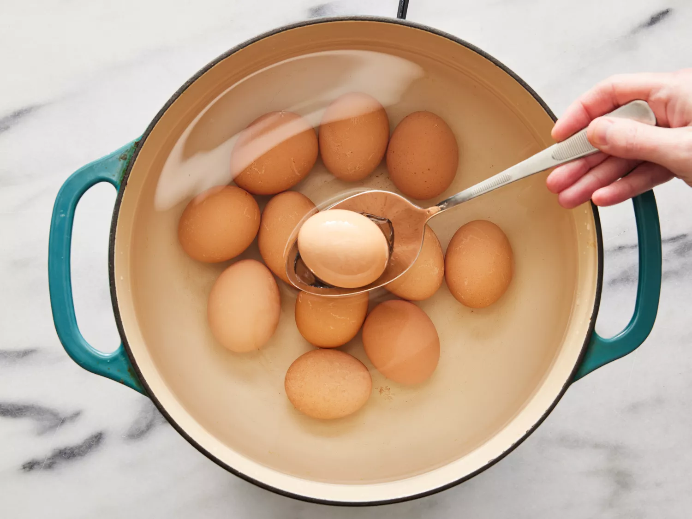

10 Minutes
20
7 Days 30 mins
Place eggs in a saucepan and cover with water. Bring to a boil, remove from heat, and let eggs stand in hot water for 15 minutes. Remove eggs from hot water, cool under cold running water, and peel. Discard hot water.
Bring vinegar, sugar, and salt to a boil in the same saucepan until sugar is dissolved. Remove from heat.
Place peeled eggs, garlic, and bay leaf in a 1-quart mason jar; top with vinegar mixture. Seal the jar and refrigerate for at least 1 week before serving.
The Jarring process takes time but you will be very happy you waited.
After about a week your pickled eggs will be nice and tangy ready to eat.
You can add Jalapeno slices for taste and a little bit of spice